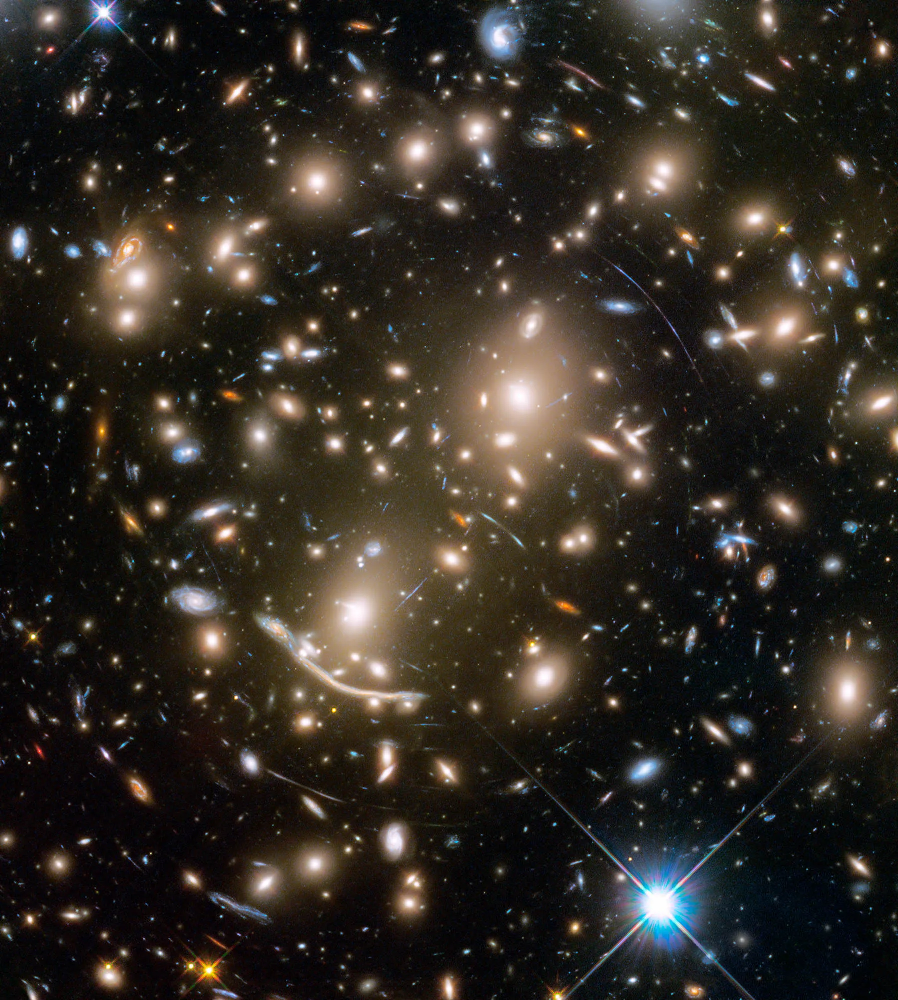
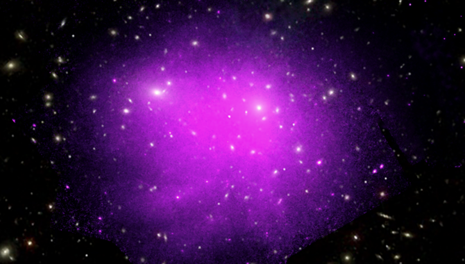

Dark Matter in Space
What is Dark Matter?
Dark matter is a mysterious and invisible substance that makes up about 27% of the universe's total mass and energy. Unlike ordinary matter—like stars, planets, and galaxies—dark matter does not emit, absorb, or reflect light, making it undetectable by conventional telescopes. Its existence is inferred from gravitational effects on visible matter.

The Evidence for Dark Matter
- Galactic Rotation Curves: When astronomers studied the rotation speeds of galaxies, they found that the outer stars rotate at much higher speeds than expected. This discrepancy suggests the presence of unseen mass, extending far beyond the visible components of the galaxy.
- Gravitational Lensing: Light from distant galaxies bends around massive objects, a phenomenon known as gravitational lensing. The amount of bending indicates more mass is present than what we can see, implying dark matter's presence.
- Cosmic Microwave Background: Measurements of the cosmic microwave background radiation, the afterglow of the Big Bang, provide a snapshot of the early universe. Analyses show fluctuations that suggest the influence of dark matter on the formation of large-scale structures.

Current Theories and Research
Various theories attempt to explain the nature of dark matter:
- Weakly Interacting Massive Particles (WIMPs): These are hypothetical particles that could make up dark matter and interact via the weak nuclear force and gravity.
- Axions: These are another class of hypothetical particles that could be a component of dark matter.
- Modified Gravity Theories: Some scientists propose changes to the laws of gravity to account for the effects attributed to dark matter, such as MOND (Modified Newtonian Dynamics).